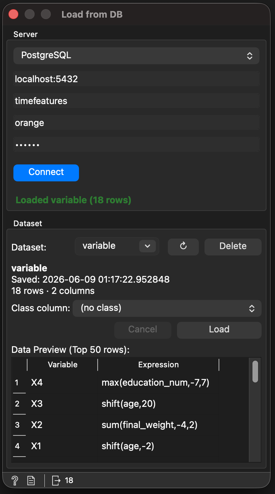

Load from DB¶
The Load from DB widget is the inverse of Save to DB. It
connects to a SQL database, lists the datasets previously persisted by
Save to DB, and pulls the selected one back into Orange as a
Table — optionally marking the class column on the fly so no
Select Columns widget is needed downstream.

The Load from DB widget.¶
Inputs¶
This widget has no input signals.
Outputs¶
Signal |
Type |
Description |
|---|---|---|
Data |
|
The loaded dataset. If the user picks a class column, the
resulting domain already exposes it as the class variable; all
other columns stay in |
Controls¶
Field |
Description |
|---|---|
Database type |
Combo box at the top of the connection box. Pick PostgreSQL
or MySQL. The driver and quoting rules adapt automatically
through the same |
Connection status |
Small label under the connection box. Shows three states: neutral (“Not connected”, “Connecting…”, “Listing datasets…”, “Loading <name>…”), success (“Connected to PostgreSQL: host/db (N datasets)”, “Loaded <name> (N rows)”), error (“Connection failed: …”, “Load failed: …”). |
Dataset |
Searchable combo populated from |
↻ (Refresh) |
Small button to the right of the Dataset combo. Re-runs the list query without dropping the connection. Useful if another Orange canvas (or a parallel tool) just published a new dataset while this widget was open. |
Delete |
Drops the currently selected dataset’s table from the database
and removes its row in |
Dataset info |
Read-only block under the combo: save timestamp, row/column counts and the original class column recorded by Save to DB. |
Class column |
Combo with every column of the selected dataset plus a
|
Load |
Triggers the actual download. Skipped automatically on the first connection after a workflow reopen if the persisted dataset name is still available (see Auto-load below). |
How it Works¶
When the Connect button is clicked, the widget validates the
connection through OWBaseSql (the same path Save to DB uses) and
then spawns a background QThread that runs a
_ListDatasetsWorker. The worker queries the datasets metadata
table via SQLAlchemy and emits the result back to the GUI thread.
Selecting a dataset triggers a tiny SELECT * FROM <name> LIMIT 0
to fetch the column list — this is cheap enough to run synchronously
because the server only returns the column header.
When Load is clicked, a _LoadTableWorker runs
pandas.read_sql("SELECT * FROM <name>", engine) on a background
thread, returning a DataFrame that the GUI thread converts into an
Orange.data.Table with
Orange.data.pandas_compat.table_from_frame. If the user picked a
class column, the helper _build_domain_with_class rebuilds the
domain so that column becomes domain.class_var and the rest of the
columns stay in domain.attributes.
While any worker runs, the form controls (database type, connection fields, Connect, Load, dataset and class combos) are temporarily disabled and the status label keeps the user informed.
Auto-load¶
When you reopen a workflow that already had a Load from DB widget with
a saved selected_dataset, the widget fires Load automatically the
first time the dataset listing comes back successfully. The data flows
out of the Data output without a single click, mirroring how Orange
treats sources like File and Datasets.
Subtleties:
Auto-load is a one-shot per widget lifetime. Manually clicking Refresh clears the pending flag, so a Refresh never surprises the user by loading something behind their back.
If the persisted dataset no longer exists on the server (deleted from outside, or the registry was wiped), the flag is cleared and the widget just shows the available list — no error.
If a different backend or set of credentials is restored, the user still has to click Connect explicitly, just like in earlier versions; auto-load happens after the first successful connection + listing.
Workflow Persistence¶
Two Setting\s are persisted with the workflow:
selected_dataset— the name picked in the Dataset combo.selected_class— the name picked in the Class combo (""means “no class”).
Both are declared as Setting(..., schema_only=True), mirroring the
Time Features Constructor convention: the values live in the
.ows file but never become global defaults. On reopening a
workflow, the widget restores the choices as soon as the connection
succeeds and the dataset list arrives.
Usage Example¶
Round-tripping a dataset through the database:
In one Orange workflow, attach a File widget to Save to DB and upload the data with a chosen table name.
In another workflow (or the same one), drop a Load from DB widget.
Pick the database type, fill in the connection fields, and click Connect.
Pick the dataset in the Dataset combo. The info block shows the timestamp and the original class.
Override the Class column if you want a different target, or leave the default to keep the original one.
Click Load. The table flows out of the Data output ready for any downstream Orange widget — no Select Columns in between.
Requirements¶
TimeFeatures brings every dependency the widget needs:
SQLAlchemy>=1.4.0 # dialect-agnostic SQL toolkit
psycopg2-binary>=2.9.9 # PostgreSQL driver
PyMySQL>=1.0.0 # MySQL driver
pandas itself is a transitive dependency of Orange3.